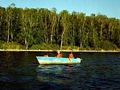
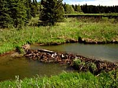
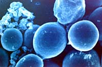

|
Fish Habitat
What constitutes good fish habitat? Think of what fish need for survival and for procreating their species. Amazingly, fish have the same basic needs as any other organism, including humans (they just happen to live in a different medium).
Habitat Enhancement  Here's a simple task. Just answer yes or no to the statements provided to see if you are aware of how to improve fish habitat. Check out your score at the end to see how you rate...Learn how to save and care for fish habitat.
|
|
Threats to Fish Habitat
 Building a road near a creek or raising livestock near a pond may seem harmless, but can have detrimental effects on the fish environment. See if you can identify the problems associated with the scenarios in this section.
 Bacteria, viruses, parasites and even humans affect the health of fish in our waterways. Use the reference chart to help you understand the number and types of diseases that can affect the fish that you may catch and eat. Find out what you can do to help prevent the spread of disease.
|